Dice Game Java application with GUI, GUI part.
In this part, the goal is to implement a GUI (Graphical User Interface) from UML class diagram, specifications given as generated Javadoc (Javadoc comments don't need to be rewritten), and following guidelines.
GUI has to be implemented in proper package.
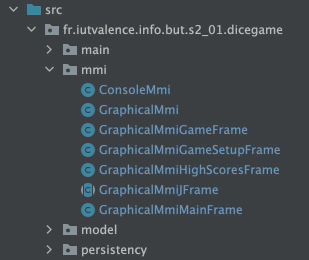
Below is a complete UML class diagram representing Dice Game GUI:
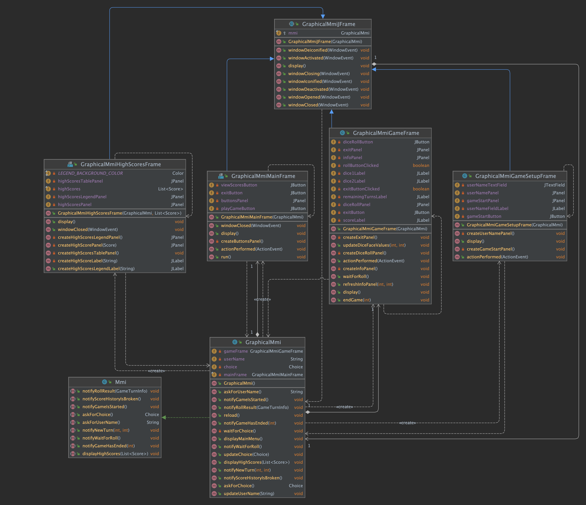
GraphicalMmi, like ConsoleMmi (the text-based Man-Machine interface), is an implementation of Mmi interface, as shown below:
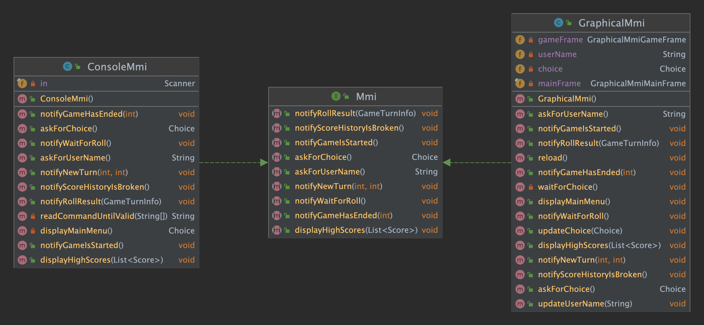
GraphicalMmi is in charge of displaying the main frame allowing to access to main features (play game, view high scores, exit) through a menu.
Each feature is associated to a dedicated frame (further called sub-frame):
GraphicalMmiMainFrame is the main frame, displaying the menu
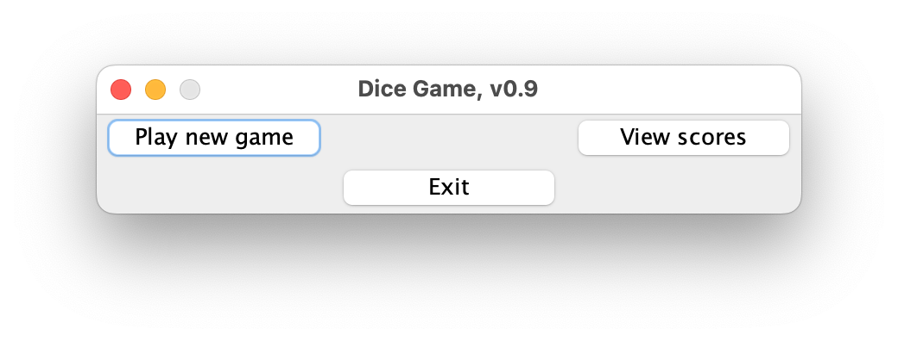
GraphicalMmiHighScoresFrame is the high scores frame, allowing to display high scores
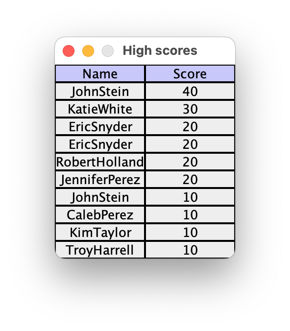
GraphicalMmiGameSetupFrame is the game setup frame, allowing to ask for user name and to start a new game
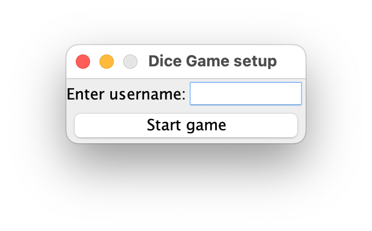
GraphicalMmiGameFrame is the game frame, allowing to play dice game
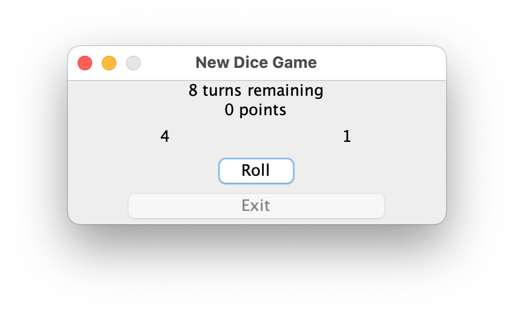
All these frames, as depicted below, are GraphicalMmiJFrame subclasses. GraphicalMmiJFrame is a convenience (abstract) superclass for all sub-frames, defining common structure and behaviour.
Below are given implementation guidelines, completion order must be respected.
The first objective is to be able to display a main frame, not realistic but just to ensure that
MmiandDiceGameManagercommunicate properly.
GraphicalMmiJFrame is a convenience (abstract) superclass for all graphical mmi sub-frames. Frame is also its own window listener, allowing to dispose of frame on closing.
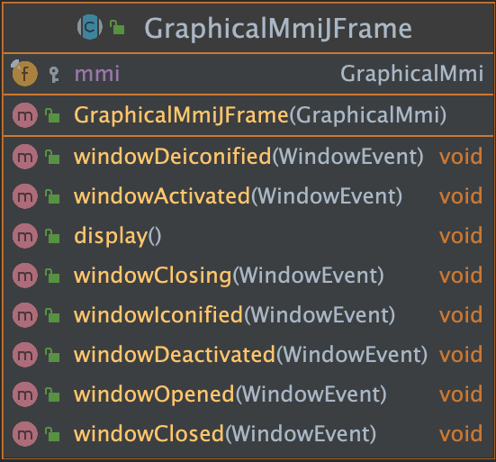
display method packs the frame, turns it to visible, and prevents it from being resized.windowClosing method (overridden from WindowListener interface) disposes of the frame.WindowListener interface have an empty implementation.GraphicalMmi is the graphical implementation of Mmi interface.
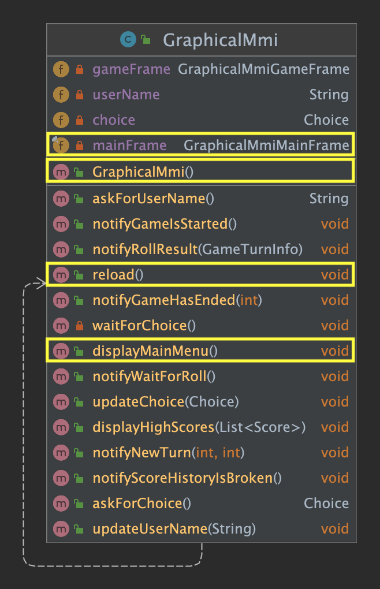
In this step, only the elements shown inside a yellow border have to be declared / implemented.
GraphicalMmiMainFrame instance (without displaying it).displayMainMenu method launches a new Swing task that will further display main framereload method restores main frame (after a sub-frame has been closed). To do so, it packs main frame and turns it to visible again.GraphicalMmiMainFrame is the main frame, displaying a menu to access main features. It is also the Swing task displaying the frame itself, as well as the action listener registered on some of its sub-components (buttons).
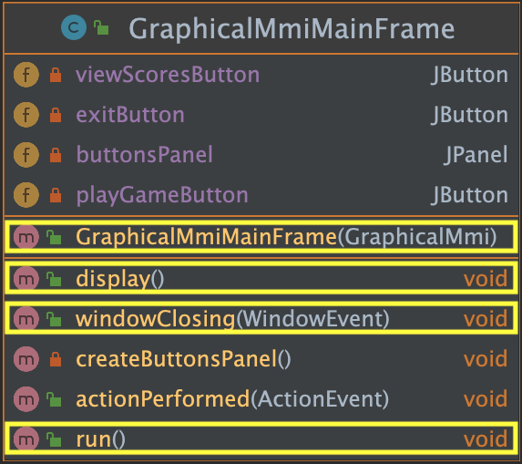
During this step, only the elements shown inside a yellow border have to be declared / implemented. For now, this class does not need to implement ActionListener interface, but only Runnable.
display method:
300x100 (temporarily comment pack method call in GraphicalMmiJFrame display method to see frame properly)display super-implementation to turn frame visiblerun method (overridden from Runnable interface) displays this framewindowClosing method (overridden from GraphicalMmiJFrame class) exits applicationWrite a GraphicalMmiCollectionScoreHistoryMain application (in same package as ConsoleMmiCollectionScoreHistoryMain) that:
Verify that application execution displays main frame and that application terminates when closing frame.
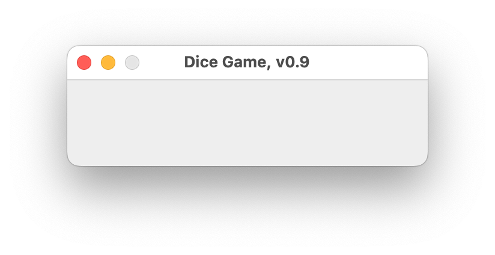
Commit with GUI-MainFrame-Blank as title (and a detailed description if needed), and push.
The next objective is to be able to display the main frame as expected, but without event handling.
pack method call in display methodAll elements of UML class diagram are declared / implemented except actionPerformed method (ActionListener is not implemented yet)
createButtonsPanel method initializes buttonsPanelwith a new JPanel instance and adds sub-components to it using a 2-row by 3-column grid layout
JLabel instances with blank text (to be invisible)display method:
display super-implementation to turn frame to visibleVerify that GraphicalMmiCollectionScoreHistoryMain application execution displays main frame as expected.
Commit with GUI-MainFrame-Layout as title (and a detailed description if needed), and push.
The next objective is to be able to display the main frame as expected, with event handling.
GraphicalMmiMainFrame now implements ActionListener, frame is its own listener for event occuring on buttons.
updateChoice on Mmi instance with appropriate value (with regards to button)
Exit button, it also disposes of the frameupdateChoice method for now just has to print choice on standard output (for testing purpose).Verify that GraphicalMmiCollectionScoreHistoryMain application execution shows expected behaviour with regard to event handling.
Commit with GUI-MainFrame-Event as title (and a detailed description if needed), and push.
The next objective is to synchronize
DiceGameManagerandGraphicalMmi(and mainly main and Swing threads) to wait for /notify user choice.To do so,
choicefield is used as a mailbox by main and Swing threads. The former waits forchoiceto have a value (askForChoice), the latter updates its value (updateChoice).
choice field
volatile (so that threads read/write it properly on their own side)null value (meaning that it has no value from menu point of view)waitForChoice method waits until choice value becomes not null
askForChoice method (called from DiceGameManager by main thread):
waitForChoice choice value, but also resets it to null for the next timeupdateChoice method (called from GraphicalMmiMainFrame by Swing thread) updates choice value
displayHighScores and askForUserName methods just have for now to print their name on standard output (for testing purpose)
Verify that GraphicalMmiCollectionScoreHistoryMain application execution shows expected behaviour.
Commit with GUI-MainFrame-Choice as title (and a detailed description if needed), and push.
The next objective is to implement
GraphicalMmiGameSetupFrame.
GraphicalMmiGameSetupFrame is made of 2 panels, vertically stacked:
usernamePanel containing a label and a textfieldgameStartPanel containing Start Game buttonThese panels are created (by calling ad'hoc methods) and added to frame content pane in display method (using a simple grid layout).
windowClosing method:
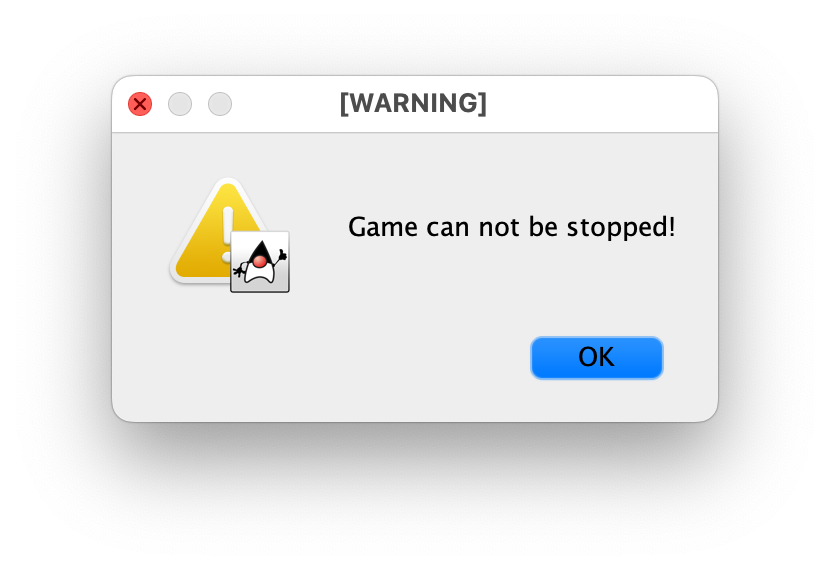
actionPerformed method:
updateUserName method on Mmi instance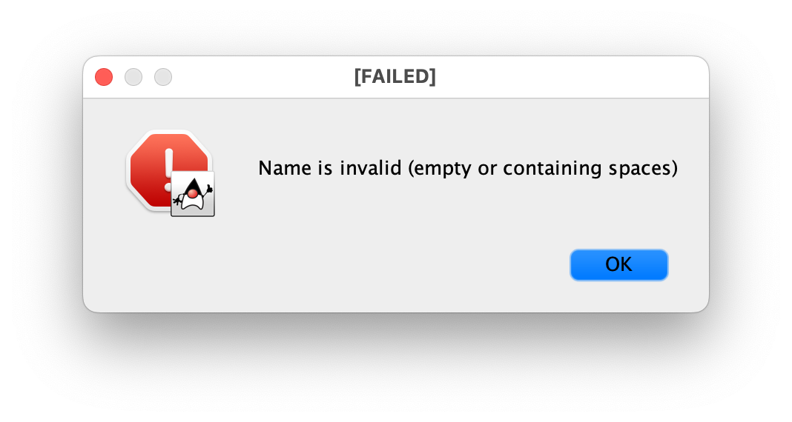
username field must be declared with the special keyword volatile (so that threads read/write it properly on their own side)
askForUserName method (called from DiceGameManager by main thread):
GraphicalMmiGameSetupFrame instance and displays it userName to nulluserName becomes not null and returns its valueupdateUserName method (called from GraphicalMmiGameSetupFrame by Swing thread) updates choice value
notifyGameIsStarted method for now just has to print method name on standard output (for testing purpose)
Verify that GraphicalMmiCollectionScoreHistoryMain application execution shows expected behaviour.
Commit with GUI-MainFrame-GameSetup as title (and a detailed description if needed), and push.
The next objective is to implement
GraphicalMmiGameFrame.
GraphicalMmiGameFrame is made of 3 panels, vertically stacked:
infoPanel containing 2 labels (remainingTurnsLabel and scoreLabel)diceRollPanel containing 3 labels (one for each dice roll value, one blank used for spacing) and a Roll buttonexitPanel containing 2 blank labels (used for spacing) and an Exit buttonThese panels are created (by calling ad'hoc methods) and added to frame content pane in display method (using a grid bag layout whose constraints are defined as {fill: BOTH, gridx: 0}).
Exit button is disabled so that it cannot be clicked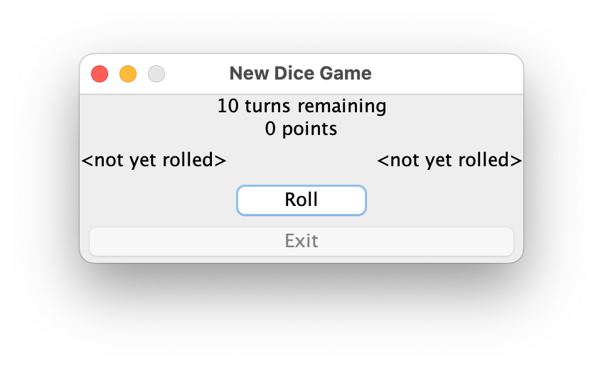
Exit button is disabled so that it can not be clicked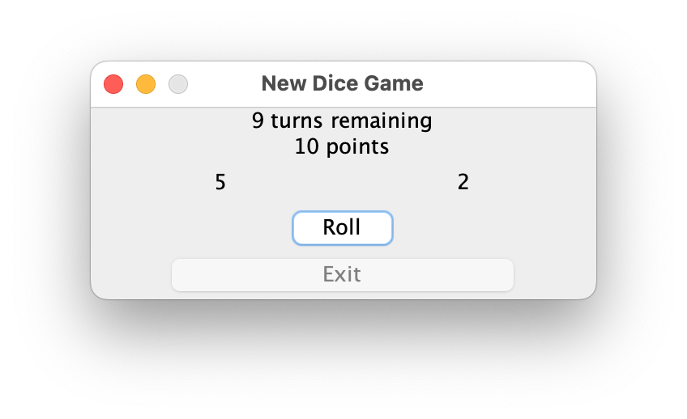
Roll button is disabled so that it can not be clickedExit button is enabled so that it can be clicked to exit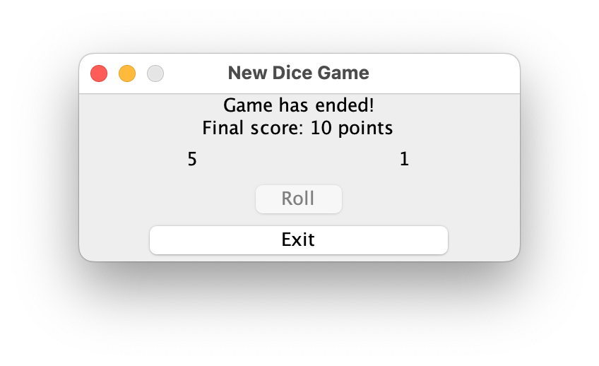
Constructor also sets default close operation to Do nothing
rollButtonClicked field is used to synchronize GraphicalMmi and GraphicalMmiGameFrame for dice rolls and game exit, so it must be declared with the special keyword volatile (so that threads read/write it properly on their own side)
waitForRoll method sets rollButtonClicked to false, waits until it becomes true and resets it to false again
endGame method:
Roll buttonExit buttonexitButtonClicked to false, waits until it becomes true and resets it to false againwindowClosing method:
updatedDiceFaceValues method refreshes dice roll value labels
actionPerformed method turns either rollButtonClicked or exitButtonClicked to true
To be able to play game, some methods have to be implemented / updated:
notifyGameIsStarted method turns main frame to invisible, creates a new GraphicalMmiGameFrame instance and displays itnotifyNewTurn method refreshes game frame information panel notifyWaitForRoll method calls waitForRoll on GraphicalMmiGameFrame instancenotifyRollResult updates game frame dice roll panel with roll resultsnotifyGameHasEnded method calls endGame on GraphicalMmiGameFrame instanceVerify that GraphicalMmiCollectionScoreHistoryMain application execution shows expected behaviour.
Commit with GUI-MainFrame-Game as title (and a detailed description if needed), and push.
The last objective is to implement
GraphicalMmiHighScoresFrame.
GraphicalMmiHighScoresFrame is made of a single panel (highScoresTablePanel), displaying high score like a table (legend row, data rows).
highScoresTablePanel is created (by calling ad'hoc method) and added to frame content pane in display method (using a simple grid layout). It contains two sub-panels (highScoresLegendPanel and highScoresPanel), vertically stacked using a grid bag layout whose constraints are defined as {fill: BOTH, gridx: 0}:
highScoresLegendPanel contains 2 labels whose background color is set to LEGEND_BACKGROUND_COLOR (RGB values are [200, 200, 250])highScoresPanel contains up to 10 sub-panels (depending on score list, which is by the way already sorted) made of 2 labelsWhen no score has been added yet, high score table looks like below:
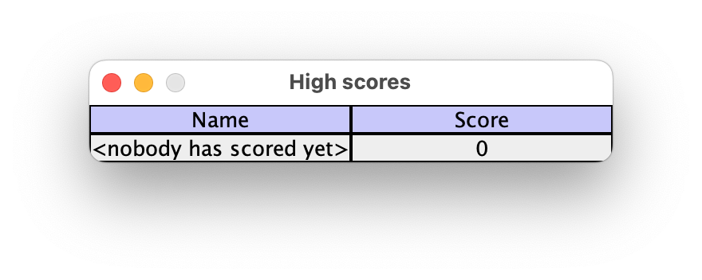
windowClosing method disposes of the frame (by calling super-implementation) and reloads MmiTo be able to display high scores, a last method has to be implemented:
displayHighScores method turns main frame to invisible, creates a new GraphicalMmiHighScoresFrame instance and displays itVerify that GraphicalMmiCollectionScoreHistoryMain application execution shows expected behaviour.
Commit with GUI-MainFrame-HighScores as title (and a detailed description if needed), and push.